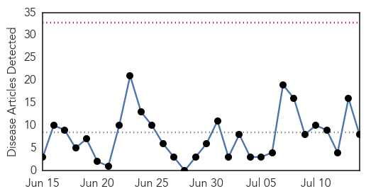
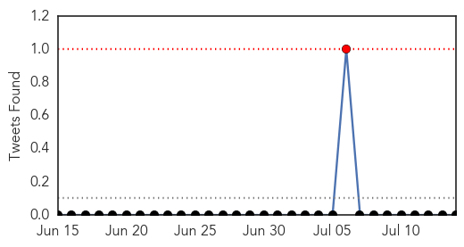

30 Day Trends
Web: 0 alerts, 0 warnings
Twitter: 3 alerts, 0 warnings
Top Articles:
- 0.999
- South Sudan: MSF opens a cholera treatment center in Juba
- 0.907
- EAC deploys Regional Medical Emergency Support Teams to Refugee Camps > IGIHE.com English Version
- 0.886
- Cholera Cases Multiply as Cost of Clean Water Skyrockets in South Sudan Capital: Oxfam
- 0.819
- The Upper Nile Times Cholera Outbreak Kills 33 People in JubaThe Upper Nile Times
- 0.618
- Newmont Mining signs three-year agreement for Project C.U.R.E
- 0.571
- Niger: Critical situation in Diffa
- 0.564
- Niger: critical situation in Diffa as hunger gap and malaria season approach
- 0.544
- Sixty million Nigerians lack access to clean water, says Sobowale
Top Tweets:
-
No tweets found for Jul 14, 2015
Web/News Articles
Tweets
Article Locations